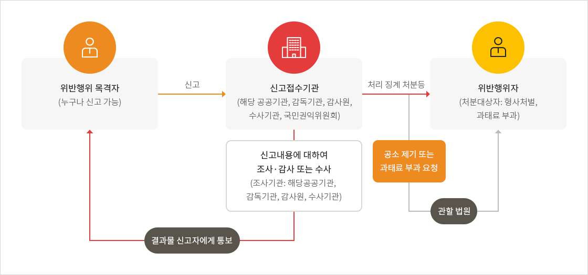

청탁금지법 위반행위 신고안내
청탁금지법 위반행위 신고대상
부정청탁 신고
직접 또는 제3자를 통하여 직무를 수행하는 공직자등에게 법 제5조제1항각 호에 따른 부정청탁을 하거나 부정청탁을 받은 공직자등이 법 제6조를 위반하여 부정청탁에 따라 직무를 수행하는 행위
금품 등 수수 신고
공직자등 또는 그 공직자등의 배우자가 법 제8조에 따른 수수 금지 금품등을 받거나 요구 또는 약속하는 행위 (수수 금지 금품등을 제공하거나 제공의 약속 또는 의사표시 하는 행위)
외부강의 등 초과사례금 수수신고
공직자등이 외부강의 시 청탁금지법 시행령 별표2에서 정하는 금액을 초과하여 사례금을 수수하는 행위
그 밖에 청탁금지법에서 정하고 있는 사항을 위반하는 행위
청탁금지법 위반행위 신고방법
누구든지 청탁금지법 위반행위를 알게 됐을 때 한국무역보험공사, 국민권익위원회, 산업통상자원부, 감사원, 수사기관에 신고할 수 있습니다.
※ 귀하가 제기하신 민원이 부패.공익 신고에 해당될 경우, 「부패방지권익위법」 및 「공익신고자 보호법」에 따라 신고자는 보호되고 지원됨을 안내드립니다.
| 구분 | 내용 |
|---|---|
| 온라인 | 국민권익위원회 ‘청탁금지법 위반신고’ 코너 바로가기 |
| 우편/방문 | (03187) 서울특별시 종로구 종로 14 (서린동), 한국무역보험공사 7층 사회적가치혁신실 청탁방지담당관 |
| FAX | 02-399-6904 |
| 신고서 | 청탁금지법 위반행위 신고서.pdf |
※ 타인으로 하여금 형사처벌이나 징계처분을 받게 할 목적으로 허위사실을 신고하는 경우 「형법」상 무고죄 성립 가능
청탁금지법 위반행위 신고처리 절차

크게보기
{kind=link}
위반행위 목격자라면 누구나 신고가능하며 신고접수기관(해당 공공기관, 감독기관, 감사원, 수사기관, 국민권익위원회)에 신고하실 수 있습니다.
신고가 접수되면 신고접수기관에서 신고내용에 대하여 조사기관(해당공공기관, 감독기관, 감사원, 수사기관) 에서 조사, 감사 또는 수사에 착수하며 결과물 신고자에게 통보합니다.
신고결과에따라 위반행위자(형사처벌, 과태료 부과 대상자)에게 처리 징계 처분등이 내려지며 위반행위자는 공소 제기 또는 과태료 부과 요청을 관할 법원에서 진행할 수 있습니다.
청탁금지법 위반 신고자 보호제도 안내
| 비밀보장 | 신변보호 | 책임감면 | 보호조치 |
|---|---|---|---|
| 청탁금지법 위반신고 등의 인적사항 등을 다른 사람에게 알려주거나 공개 또는 보도 금지 | 청탁금지법 위반신고 등을 이유로 신체에 중대한 위협을 입었거나 입을 우려가 명백한 경우 국민권익위원회에신변 보호 요구 가능 | 청탁금지법 위반신고 등과 관련 청탁금지법 위반 신고자 등의 범죄행위가 발견된 경우 그 형을 감경 또는 면제 가능 | 청탁금지법 위반신고 등을 이유로 신분상 불이익조치등을 받았거나 받을 것으로 예상 시 원상회복 또는 불이익 조치 금지 |
청탁금지법 위반 신고자 보상 및 포상제도 안내
| 보상제도 | 포상제도 |
|---|---|
| 청탁금지법 제13조에 따른 신고로 인하여 직접적인 공공기관 수입의 회복이나 증대 또는 비용의 절감 등을 가져오거나 그에 관한 법률관계가 확정된 때 신고자는 국민권익위원회에 보상금 지급 신청 가능 | 청탁금지법 제13조에 따른 신고로 인하여 현저히 공공기관에 재산상 이익을 가져오거나 손실을 방지한 경우 또는 공익의 증진을 가져온 경우에는 신고를 한 자에 대하여 상훈법 등의 규정에 따라 포상을 추천할 수 있으며, 대통령령으로 정하는 바에 따라 포상금 지급 가능 |